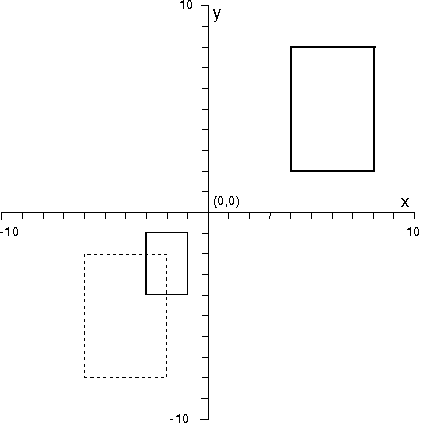
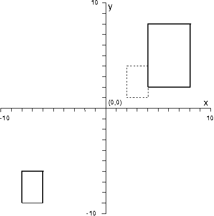

Each time one of the transformation functions is called by an application, the application can set the function's option parameter to control how the function combines the transformation with existing transformations and in what order the transformations are applied.
┌────────────────────────────────────┬────────────────────────┐ │If the application uses this flag...│Then the operating │ │ │system... │ ├────────────────────────────────────┼────────────────────────┤ │TRANSFORM_REPLACE │Replaces any existing │ │ │transformations with the│ │ │new transformation. The │ │ │existing value of the │ │ │matrix is discarded and │ │ │replaced by straight │ │ │substitution. │ ├────────────────────────────────────┼────────────────────────┤ │TRANSFORM_PREEMPT │Applies the new │ │ │transformation before │ │ │applying the existing │ │ │transformation. │ │ │The transformation │ │ │matrix of the new │ │ │transformation is │ │ │pre-multiplied with the │ │ │transformation matrix of│ │ │the current │ │ │transformation. │ ├────────────────────────────────────┼────────────────────────┤ │TRANSFORM_ADD │Applies the new │ │ │transformation after │ │ │applying the existing │ │ │transformation. │ │ │The transformation │ │ │matrix of the new │ │ │transformation is │ │ │post-multiplied with the│ │ │transformation matrix of│ │ │the current │ │ │transformation. │ └────────────────────────────────────┴────────────────────────┘
The order in which transformations are applied affects the appearance of the picture. For example, suppose that a box primitive has been defined, with its lower-left corner at (4,2) and its upper-right corner at (8,8), and that you want both to scale the box by 0.5 and to translate it by (-10,-10).
If the box is translated before scaling it, the transformed box is as shown in the following figure.
Translating before Scaling
The translated box has its lower-left corner at (-6,-8), and its upper-right corner at (-2,-2). Each of its coordinates is then scaled by 0.5, and the transformed box has its corners at (-3,-1), (-1,-1), (-3,-4), and (-1,-4).
If the box is scaled before translating it, the transformed box is as shown in the figure after the following figure.
Scaling before Translating
The scaled box has its lower-left corner at (2,1), and its upper-right corner at (4,4). The box is then translated by (-10,-10), and the transformed box has its corners at (-8,-6), (-6,-6), (-6,-9), and (-8,-9).
When an application is drawing a picture in which there are called segments, and in which transformations are applied to the root segments, the root-segment transformations should usually be applied to any segments they call. For example, if a segment that is translated to the left of the picture (by changing its segment transformation) calls a second segment, that leftward transformation should also be applied to the called segment. In this instance, the application would specify TRANSFORM_ADD in the call to GpiCallSegmentMatrix to add the instance transformation to the calling segments' segment transformation. Instance transformations are automatically reset on return to the calling segment.